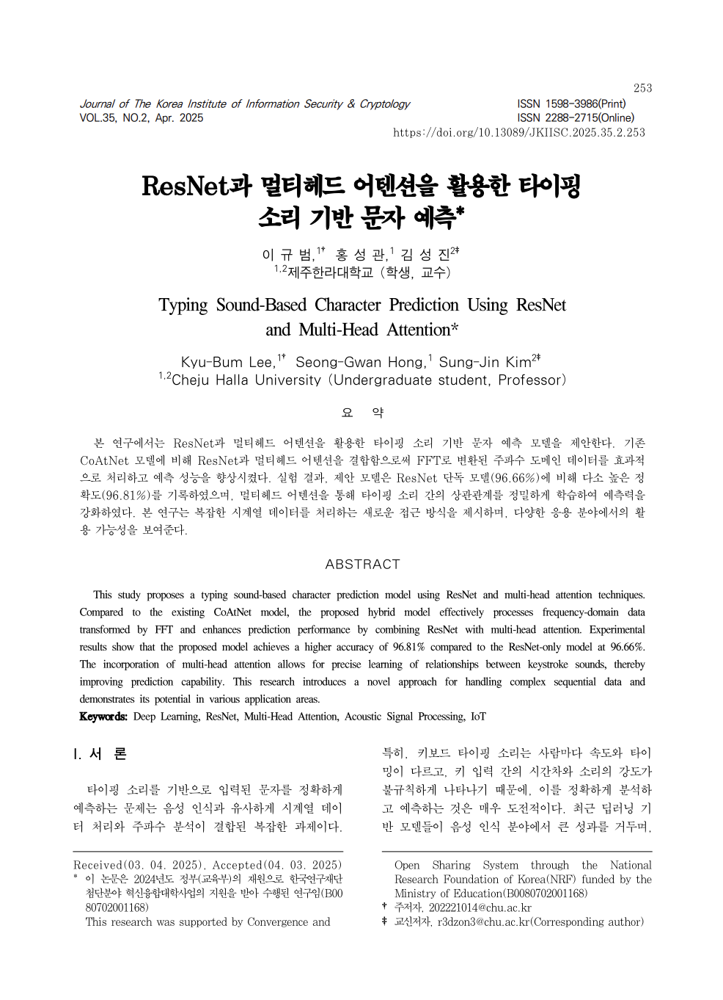

01
연구 배경
키보드 타이핑 소리는 평범한 소음처럼 들리지만, 그 안에는 어떤 문자를 눌렀는지가 새어 나옵니다. 이 정보 유출 위협을 AI로 탐지·복원할 수 있는지 검증한 연구입니다.
방법
FFT로 타이핑 음향을 주파수 도메인으로 변환해 특징을 추출하고, ResNet50과 멀티헤드 어텐션을 결합한 하이브리드 모델로 40개 키 입력을 분류했습니다.
결과
기존 CoAtNet 대비 정확도 96.81%(+3.61%p)를 달성했습니다. 정보보호학회논문지(JKIISC) vol.35 no.2, pp.253–264에 제2저자로 게재(KCI 등재)했습니다. KCI에서 논문 보기 ↗
